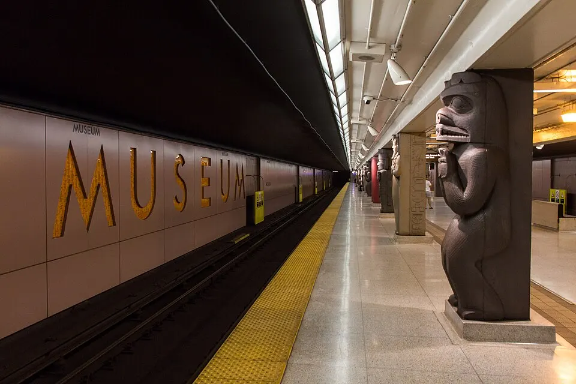

Signal
SignalStation atlas / Museum
Station history
Museum


Station history
The University subway opened beside the Royal Ontario Museum. North of the station, the track layout allowed for a future junction with the east–west subway.
The TTC unveiled columns modelled on objects in museum collections and a new treatment of the platform walls.